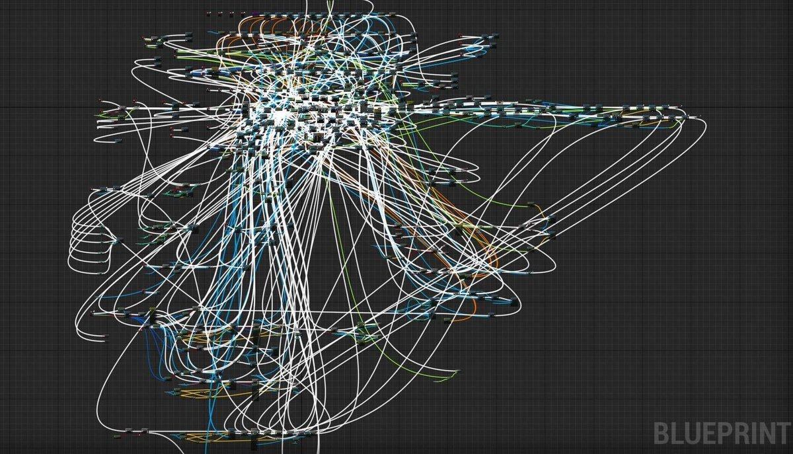

Part 2: Backend Architecture
BACKEND EVOLUTION
Từ Monolith đến Microservices
"Khi có hàng triệu users, chúng ta không thể chỉ xếp code vào một
thư mục được nữa."
01
The Start
Khái niệm Nguyên khối (Monolith)
Định nghĩa:
Một khối duy nhất (Single Codebase). Tất cả module chức năng được
đóng gói và deploy cùng nhau.
-
1 File Deployment (.war,
.jar)
- 1 Server Process
- Shared Database
User Module
Payment
Course
Server App
02
Case Study
Udemy vào năm 2010 (Giai đoạn khởi nghiệp)
// Cấu trúc thư mục PHP/Python thuở sơ khai
project_udemy/
├──
auth/
# Login, Register
├──
video/
# Upload, Stream
├──
billing/
# Charge money
├──
index.php
└──
db_config.php
# 1 Connection String
Logic đăng
ký học viên
Logic tính
tiền
Logic xử lý
video
Dùng chung 1 Database
03
Analysis
Tại sao Monolith lại được chọn ban đầu?
99% Startup chọn kiến trúc này ban đầu vì...
Dễ phát triển
IDE hỗ trợ tốt, code nằm một chỗ
Dễ gỡ lỗi
Trace lỗi từ A-Z trong 1 dòng
Rẻ tiền
1 Server là đủ chạy
04
The Reality
Thực tế của một process đơn
function
buyCourse(user, course) {
// Gọi hàm nội bộ -> Cực nhanh (Memory Call)
if (checkBalance(user)) {
addCourseToProfile(user, course);
sendEmail(user);
}
}
Mọi chuyện êm đẹp cho đến khi User thứ 1 triệu xuất
hiện.
05
Growing Pains
The "Big Ball of Mud"
Codebase trở nên khổng lồ và rối rắm (Spaghetti code).

Scenario:
Một Dev sửa tính năng "Đổi Avatar"...
-> Vô tình làm hỏng tính năng "Thanh toán".
Hậu quả: Không ai dám chạm vào code cũ (Legacy Code).
06
Growing Pains
Ác mộng khi deploy
Thay đổi nhỏ
Sửa lỗi chính tả
Build lớn
Build 2GB Source Code
Downtime
Restart toàn bộ Server
07
Black Friday Case
Bức tường mang tên Scalability
Black Friday: Nhu cầu Thanh toán tăng 500%. Video xem bình thường.
08
Risk
Điểm yếu duy nhất (Single Point of Failure)
// Module Chat bị lỗi
while(true)
{
memory.consume();
// Memory Leak
}
SYSTEM CRASH
Chat chết -> Server hết RAM ->
Thanh toán cũng chết theo.
09
The Evolution
Kiến trúc Microservices
"Chia nhỏ tảng đá nguyên khối thành những viên gạch độc lập."
-
Services độc lập
-
Giao tiếp qua mạng
-
Deploy độc lập
10
Architecture
Mổ xẻ Udemy (Decoupling)
Mỗi Service chịu trách nhiệm duy nhất cho một nghiệp vụ.
11
Freedom
TechStack độc lập
Chọn công nghệ tốt nhất cho từng công việc cụ thể.
| Service |
Tech Stack |
Reason |
| Payment |
Java / Spring |
Bảo mật, Ổn định, Type-safe |
| Recommendation |
Python |
Thư viện AI/ML mạnh mẽ (Pandas, PyTorch) |
| Realtime Chat |
NodeJS |
Non-blocking I/O, Event-driven |
12
Black Friday Solved
Scale module cần thiết
Giải quyết bài toán Black Friday: Chỉ scale module Thanh toán.
Tối ưu hóa chi phí hạ tầng triệt để.
13
Resilience
Cô lập lỗi (Fault Isolation)
AI Rec chết
Gợi ý khóa học tạch
|
Main Site vẫn hoạt động
User vẫn học bình thường
"Thà hỏng một phần (Partial Failure) còn hơn chết tất cả."
14
Data Pattern
Database cho mỗi Service
Quy tắc vàng: Tránh Shared Database để không khóa bảng lẫn nhau.
15
Communication
Giao tiếp giữa các Service
Data nằm riêng, làm sao hiển thị tên User trên trang Khóa học?
GET /users/123
{ "name": "Nam" }
Sử dụng Internal API (REST hoặc gRPC).
16
The Pattern
API Gateway (Người gác cổng)
Client không thể nhớ IP của 50 Service khác nhau.
Solution: Cửa ngõ duy nhất.
- Routing (Điều hướng)
- Authentication (Xác thực tập trung)
- Rate Limiting
API GATEWAY
Service 1
Service 2
Service 3
17
Reality Check
Cái giá của sự hiện đại
Microservices giải quyết vấn đề quy mô, nhưng đẻ ra vấn đề quản lý.
Complexity
- Khó giám sát (Distributed Tracing)
- Khó test tích hợp
- Cần đội ngũ DevOps trình độ cao
# Docker Compose Nightmare
services:
user: ...
course: ...
payment: ...
gateway: ...
# ...and 50 more lines
18
Summary
Monolith vs. Microservices
| Feature |
Monolith |
Microservices |
| Complexity |
Thấp (Simple) |
Cao (Complex) |
| Scalability |
Kém (Scale all) |
Tốt (Scale partial) |
| Resilience |
Thấp (Sập toàn bộ) |
Tốt (Cô lập lỗi) |
| Phù hợp |
Startup / MVP |
Enterprise / Big Scale |
19
Bridge to Part 3
Vấn đề tiếp theo: Giao tiếp giữa các Service
"Chúng ta đã chia nhỏ Service, nhưng chúng nói chuyện với nhau bằng
cách nào hiệu quả nhất?"
REST API?
Chuẩn mực, nhưng có chậm không?
WebSocket?
Cho Realtime Chat?
Phần tiếp theo: Giao tiếp giữa các Service
20